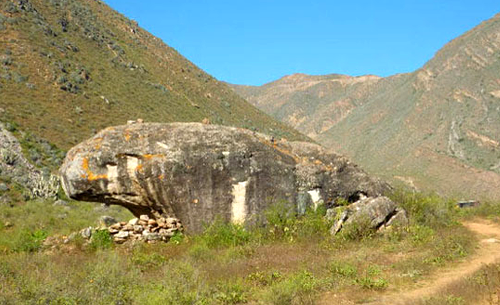

Cuenta la antigua leyenda que en tiempos remotos, en una comunidad andina que vivía en las faldas de una imponente montaña, existía un sapo gigante. Este no era un sapo común; su tamaño era comparable al de una pequeña casa y su piel era dura y rugosa como la roca. Los pobladores le temían y lo consideraban un ser maligno, causante de las sequías y las heladas que a veces azotaban sus cosechas.
Un día, la sequía se prolongó durante muchos meses. Los ríos y las fuentes de agua se secaron, y la desesperación comenzó a apoderarse de la comunidad. Los ancianos recordaron las historias sobre el sapo gigante y lo señalaron como el responsable de retener las lluvias en las entrañas de la montaña.
Desesperados, los pobladores decidieron ofrecer sacrificios al sapo de piedra con la esperanza de aplacar su ira y que liberara el agua. Llevaron sus mejores cosechas, sus animales más preciados e incluso ofrecieron objetos de valor, pero la sequía persistió y el sapo permaneció inmóvil y silencioso.
Una joven llamada Yma, conocida por su valentía y su conexión especial con la naturaleza, no creía que el sapo fuera malvado. Ella sentía que había algo más detrás de la sequía. Una noche, Yma decidió subir sola a la montaña, llevando consigo solo su quena (una flauta andina).

Al llegar cerca de la guarida del sapo gigante, Yma comenzó a tocar melodías suaves y tristes con su quena. Las notas musicales se elevaron en el silencio de la noche, llegando hasta el enorme anfibio pétreo. Para sorpresa de Yma, al escuchar la música, el sapo comenzó a moverse lentamente.
Grandes lágrimas, tan transparentes como el agua de manantial, comenzaron a brotar de sus enormes ojos. Estas lágrimas rodaron por su piel rocosa y se filtraron en la tierra seca. Poco a poco, la tierra comenzó a humedecerse y pequeños hilos de agua empezaron a brotar de las rocas.
Yma continuó tocando su quena durante horas, y mientras la música fluía, las lágrimas del sapo se hicieron más abundantes, alimentando pequeños riachuelos que descendían de la montaña. Finalmente, una lluvia suave comenzó a caer, empapando la tierra sedienta.
Cuando la lluvia cesó y los ríos volvieron a fluir, el sapo gigante se había quedado completamente inmóvil, convertido en una formación rocosa con la forma de un enorme sapo. Yma regresó a su comunidad y les contó lo sucedido. Los pobladores comprendieron entonces que el sapo no era malvado, sino que guardaba las aguas en su interior y solo necesitaba ser liberado a través de la música y la compasión.
Desde entonces, la formación rocosa con forma de sapo se convirtió en un lugar sagrado para la comunidad. Le ofrecían respeto y gratitud, recordando que la naturaleza tiene sus propios misterios y que a veces, lo que parece amenazante puede ser una fuente de vida esperando ser comprendida.